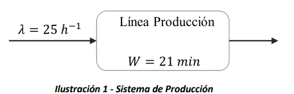
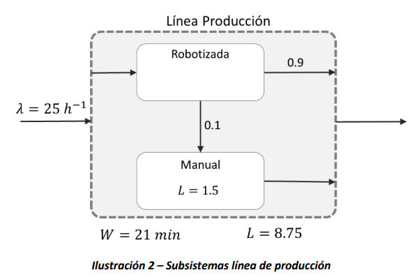

11. Ley de Little#
Este breve capítulo introduce la Ley de Little, describe su generalidad y presenta algunas aplicaciones relevantes para los análisis de sistemas que alcanzan un estado estacionario.
11.1. Introducción#
El resultado que se conoce como Ley de Little (Little’s law, en inglés), fue propuesto en 1954 por John Dutton Conant Little, quien es Profesor del Massachusetts Institute of Technology (hoy tiene 94 años). El resultado de Little es una formula muy sencilla que relaciona el número promedio de entidades en un sistema, con la tasa de llegada y el tiempo promedio de permanencia de los usuarios.
Si denotamos con \(L\) el número promedio de entidades en el sistema, con \(\lambda\) la tasa efectiva de entrada de las entidades al sistema, y finalmente con \(W\) el tiempo promedio que cada entidad pasa en el sistema, la Ley de Little afirma que:
Es importante observar que todas las cantidades mencionadas se entienden evaluadas en el estado estacionario (estable) de un sistema. La Ley de Little será particularmente útil para analizar sistemas para los cuales se conocen, o se pueden calcular fácilmente, dos de las tres cantidades\(L,\ \lambda\ o\ W\) Es incorrecto aplicar la Ley de Little a un sistema que no se encuentre en estado estacionario.
El resultado de Little es muy general, aplica para sistemas de cualquier naturaleza y es independiente de las distribuciones, del tipo de proceso de llegada, y/o del proceso específico que se realiza dentro del sistema. Por su generalidad, tiene estatus de Ley, lo cual en las matemáticas y en la física es reservado a resultados que expresan principios generales de los sistemas; por ejemplo, la Ley de Gravitación Universal de Newton, o las Leyes de la termodinámica.
Es también remarcable que la Ley de Little puede ser aplicada en el mismo sistema a diferentes niveles de abstracción, proporcionando diferentes tipos de resultados.
Para aplicar la Ley de Little, es necesario conocer dos de las cantidades que la formula relaciona, y de manera sencilla se obtiene la tercera.
11.2. Ejemplos de aplicación#
Consideremos un sistema de producción que procesa chasis de carros. Al proceso entran 25 chasis por hora y el tiempo promedio de procesamiento de cada chasis es de 21 minutos, tal como se observa en la Ilustración 1. ¿Es posible a través de la Ley de Little obtener el número promedio de chasis en la línea de producción?
 {width=”3.625in” height=”0.7443985126859143in”}
{width=”3.625in” height=”0.7443985126859143in”}

La respuesta es sí. Conocemos la tasa de llegada de los chasis, la cuál es \(\lambda = 25\ \text{horas}^{- 1}\), y también conocemos el tiempo promedio que cada chasis permanece en el sistema de producción, lo cual denotamos con \(W\), siendo \(W = 21\ \text{min} = 0.35\ \text{horas}\). Entonces podemos calcular el número promedio de chasis que habrá en estado estable en la línea de producción, es decir \(L\), utilizando directamente la fórmula de Little:
Observamos que no se necesita conocer la estructura interna de la línea de producción para contestar la pregunta.
Como se mencionó en la sección anterior, también es posible estudiar el sistema en un nivel de abstracción más detallado. Por esta razón, suponga que la línea de producción de los chasis tiene una parte robotizada y una parte manual. En la parte manual se reprocesan en promedio una décima parte de los chasis, después de que han pasado por la línea robotizada, para corregir imperfecciones de soldadura, tal como se observa en la Ilustración 2. Adicionalmente, en estado estable, hay \(1.25\ \text{chasis}\) en promedio que están siendo procesados por los operarios en la parte manual de la línea. ¿Cuál es el tiempo promedio de procesamiento en la parte robotizada?

Es posible calcular, primero, el número promedio de chasis en la parte robotizada, considerando la cantidad total en la línea de producción encontrada anteriormente. De este modo, se tiene que la cantidad en la parte robotizada es de \(L - 1.25 = 7.5\ \text{chasis}\), y se aplica nuevamente la Ley de Little, pero esta vez al subsistema de la parte robotizada. Si en el subsistema que ahora se considera hay en promedio en estado estable \(L_{1} = 7.5\ \text{chasis}\), y la tasa de llegada es \(\lambda = 25\frac{\text{chasis}}{\text{hora}} = 0.416\ \frac{\text{chasis}}{\text{minuto}}\), entonces el tiempo promedio en el subsistema será:
Ahora, calcule el tiempo promedio que permanece un chasis en la estación manual del sistema. Siempre, con la Ley de Little, podemos determinar este tiempo ya que conocemos la tasa de llegada al subsistema de reprocesamiento manual, así como el número promedio de chasis en el subsistema. Entonces, con la Ley de Little hallamos el tiempo de permanencia en el subsistema:
Obteniendo que el tiempo promedio que un chasis permanece en la estación de reprocesamiento manual es de \(30\ \text{minutos}\).
Adicionalmente, la Ley de Little nos facilita el cálculo de medidas de desempeño, como el número promedio de entidades en fila y el número promedio de entidades en servicio, los cuales se denotan como \(L_{q}\) y \(L_{s}\), respectivamente. De la misma manera, también es posible calcular el tiempo promedio que una entidad permanece en fila y el tiempo promedio que una entidad permanece en servicio, siendo estos comúnmente representados como \(W_{q}\) y \(W_{s}\), respectivamente. A continuación, se presenta la Ley de Little para estos casos particulares:
De las anteriores expresiones, se puede intuir que el número total de entidades promedio en estado estacionario será la suma del número de entidades promedio en cola y en servicio. La misma intuición se da para el tiempo total que una entidad permanece en el sistema, donde este tiempo será igual a la suma de los tiempos que una entidad permanece en cola y en servicio.